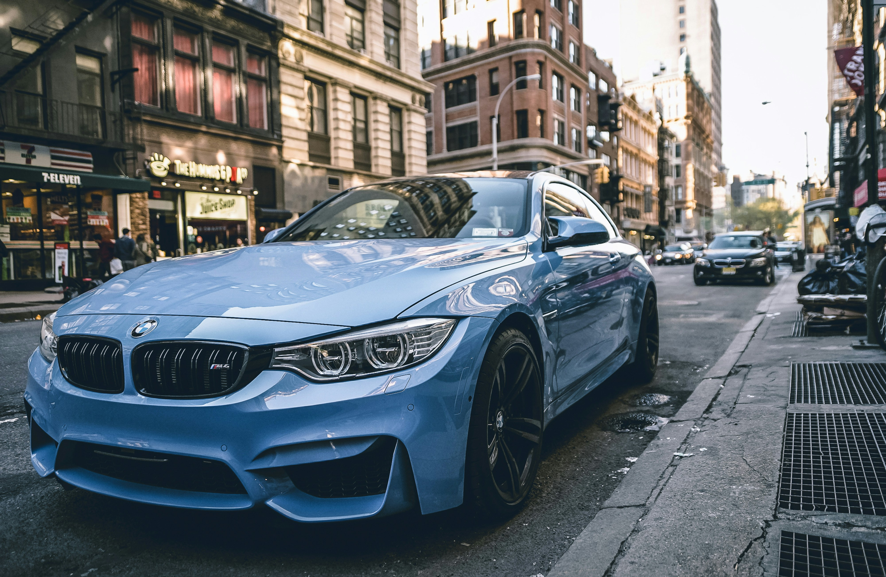

Amongst a sea of common, overpriced, glorified and unimaginative European SUV's that fill Australia's roads; the QX70S sticks out from the pack and for all of the right reasons. It's presence demands attention, not by being ostentatious like it's rivals but simply by being itself, bold and daringly individual. It's styling is unmistakably confident and truly timeless, and that confidence is felt behind the wheel in spades. It's a rare sight on the roads, and that makes it special in a way that no other high performance SUV can be. It's nice to be an individual.
Built upon the 370Z FM chassis, the QX70S is a true sports car that was designed with performance as it's primary concern. Tactile, precise and effortlessly well composed in the most aggressive of driving situations. Unmentioned by CarAdvice, the QX70S outperformed the Porsche Cayenne Turbo S and Macan S both in the slalom and skid pad. Also unmentioned is that the QX70S utilizes the ATTESA E-TS all-wheel-drive system with intelligent torque split, made famous by the R35 GTR. This is without question the best AWD system in the world and the QX70S makes great use of it by turning it's weight into an advantage rather than a disadvantage.
It's 7 speed transmission is a great piece of kit, but it's often accused of gear hunting. Again, driver/reviewer error. If you're in a situation where fast shifts and quick response is required, use the paddle shifters! That's why they're there. The QX70 also features downshift rev matching, a sweet bit of kit that ensures that it's always ready for you to plant the foot in the correct gear. In standard Auto/non sport mode the car is trying to achieve improved efficiency, not quick shifts.

n 25 September 2013, BMW released the technical specifications of the M4. It is powered by the S55B30 engine, which is developed and engineered by BMW M GmbH. This 3.0-litre inline-6 engine has been built specifically for the new M4/M3, having a redline of 7,600 rpm with the rev limiter actuated at 7,300 rpm. The engine uses two mono-scroll turbochargers with a peak boost pressure of 18.1 psi (1.2 bar). The power is rated at 317 kW (431 PS; 425 hp), however this is achieved not at a specific engine speed, but is instead rated throughout the range of 5,500–7,300 rpm. The engine's torque is rated at 550 N⋅m (406 lbf⋅ft) throughout the range of 1,850–5,500. Two transmission choices are available, the 6-speed manual and the 7-speed M-DCT transmissions. The 7-speed M-DCT transmission accelerates the car from 0 to 100 km/h (62 mph) in 4.1 seconds) and the 6-speed manual transmission from 0 to 100 km/h (62 mph) in 4.3 seconds.[3] The weight of the European specification M4 equipped with a manual transmission is 1,572 kg (3,466 lb) and with the M-DCT dual-clutch transmission, the car is some 40 kg (88 lb) heavier, losing some 80 kg (176 lb) as compared to the E92 M3.[4]
As per its E92 predecessor, the roof of the coupe model is constructed from carbon fiber (except if the optional sunroof is fitted).[5] Carbon fiber is also used for the boot lid and engine brace.[6] For the first time in a M3/M4 model, an electric power steering unit is used.[7] The steering system is specifically tuned for both the M3 and M4, however it has been criticized for lacking in feel.[8] The 18 inches (460 mm) and 19 inches (480 mm) wheel options are available with lightweight forged alloy wheels being standard. The M compound brakes come standard (with blue brake calipers), while carbon ceramic brakes (with gold brake calipers) are available as an option.
The M4 features Active Sound, live amplification of the engine's natural sound inducted into the passenger cabin via speakers in the car. BMW claims this technology has been used so that the well insulated cabin can reduce road/wind noise but still provide the driver with the sporty sound of the M powered engine. There are no artificial sound or any pre-recorded track in the system. This system was first implemented in the M5 (F10).
The M4 is based on the F32 4 Series[9] however 50 percent of its components are unique as compared to the 4 Series.[10]
The convertible variant of the M4 was announced along with its coupe sibling, also internally known as F82 or F83 M4. It shares almost everything with the coupé version, but weighs more due to its folding metal roof.[11] The convertible weighs 1,750 kg (3,858 lb) (manual), 1,691 kg (3,728 lb) (M-DCT). The three-piece retractable hardtop folds in 20 seconds.[12] The only significant difference between the two is the weight due to its retractable hardtop. Like its hardtop counterpart, the F83 M4 uses carbon fiber reinforced plastic to lighten and stiffen the car.
Because of its extra weight it accelerates slower, taking it 0.3 seconds longer to 100 km/h (62 mph); 4.9 seconds with the manual and 4.4 seconds with the M-DCT transmission. The dynamic differences between the two variants are marginally small.[13][14]
Starting from the 2019 model year (production from 07/2018 onward) BMW removed the carbon fiber driveshaft so as to be able to fit an Otto Particulate Filter (OPF), necessary to comply with WLTP emissions regulations and this also meant that the M Performance Exhaust was no longer able to be offered on these cars by BMW.[15]